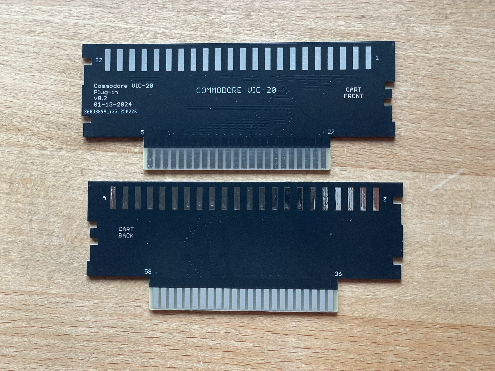
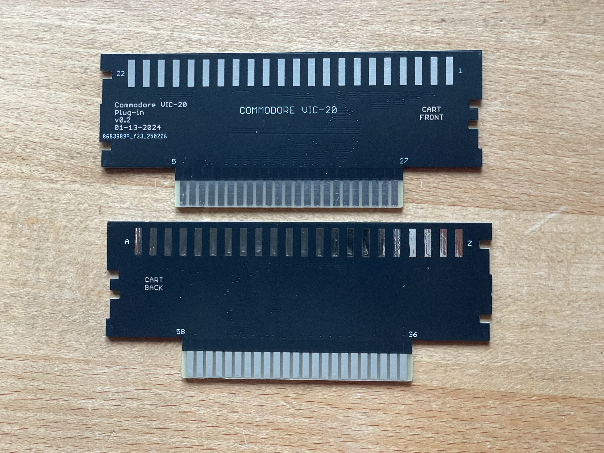
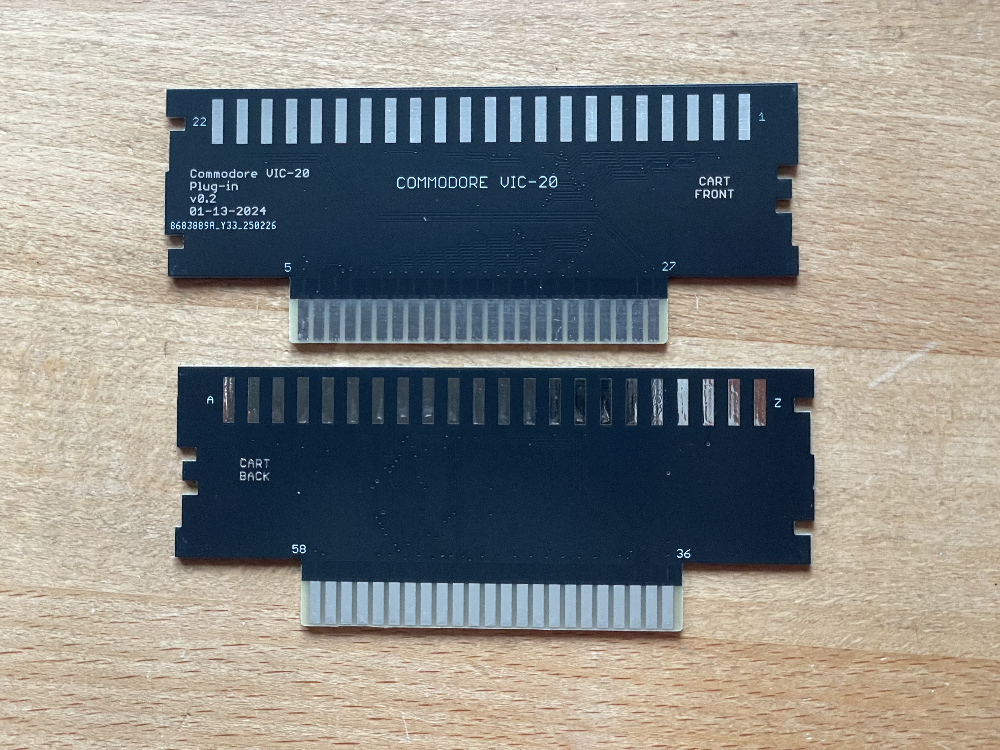

Die Platine wurde vom Originalautor getestet.

9 Stück verfügbar.
Mit diesem Adapter kann man VC-20 Module mit dem Open Source Card Reader auslesen.
Da der Adapter in die SNES Buchse passen soll, ist die Platine 1.2" dick.
| Komponente | Anzahl | Preis | Anbieter |
| Platine | 1 | €1.00 | |
| 2x22 3.96mm Edge Buchse | 1 | €1.35 | AliExpress |
| nur Platine | €1.00 | ||
| Bausatz | €2.35 |